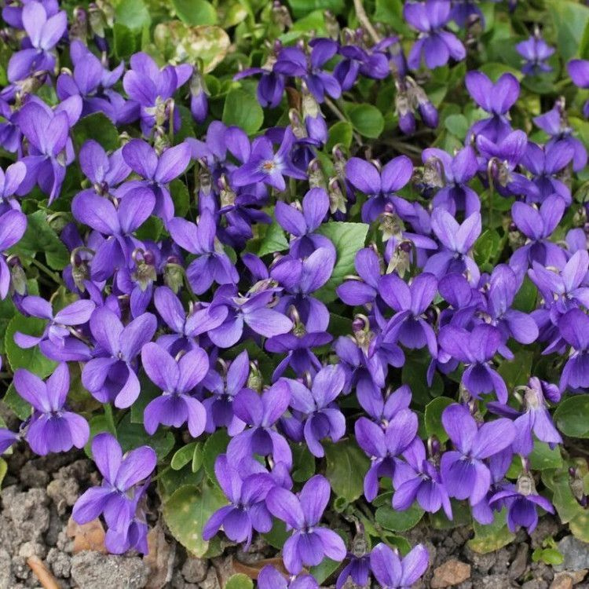
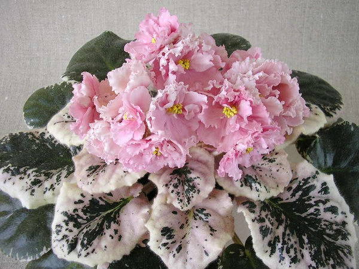

О цветах:
Фиа́лка (лат. Víola) — род растений семейства Фиалковые (Violaceae). Известно около пятисот[2] (по некоторым данным — более семисот) видов, растущих преимущественно в Северном полушарии — в горах и в регионах с умеренным климатом.
Биологическое описание
Фиалки — в большей части однолетние или многолетние травянистые растения, изредка полукустарники (виды, растущие в Андах), с попеременными, простыми или перисто-рассечёнными листьями, снабжёнными прилистниками.
Цветки одиночные, пазушные, обоеполые, зигоморфные (открытые и закрытые), околоцветник двойной: пять свободных остающихся чашелистиков с назад обращёнными придатками, пять свободных лепестков, из которых передний со шпорцем. Тычинок пять, они прижаты к пестику, нити у них короткие, передние две тычинки с мешковидным нектарником; связник расширяется над пыльниками в чешуйку. Пестик с верхней, одногнездой, многосемянной завязью, коротким столбиком и головчатым или пластинчатым рыльцем.
Плод — коробочка, вскрывающаяся створками. Семена белковые, с центральным зародышем.
Фотографии

